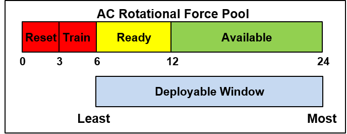
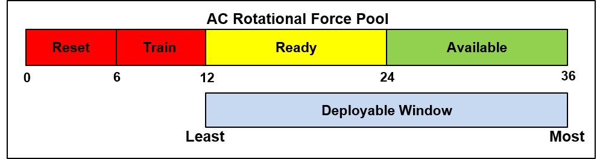
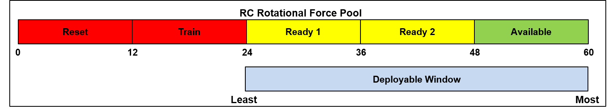
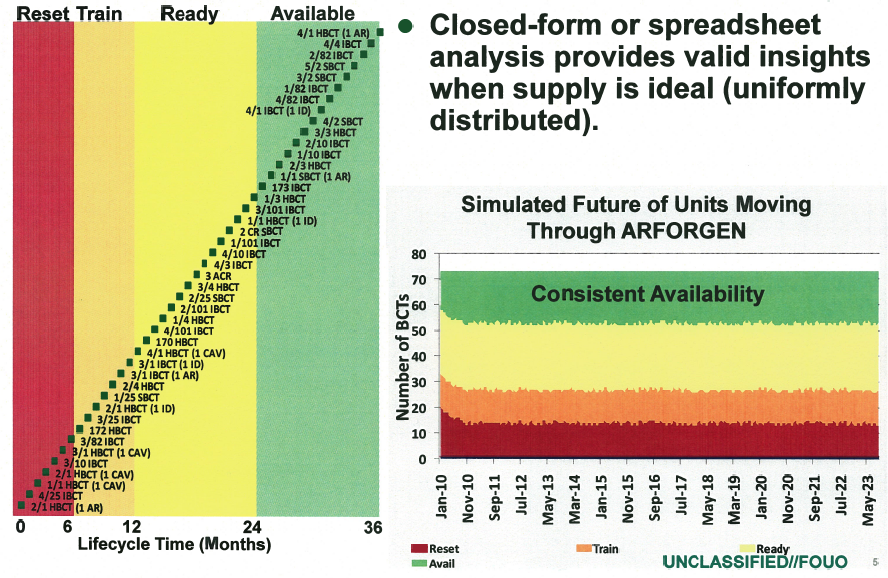
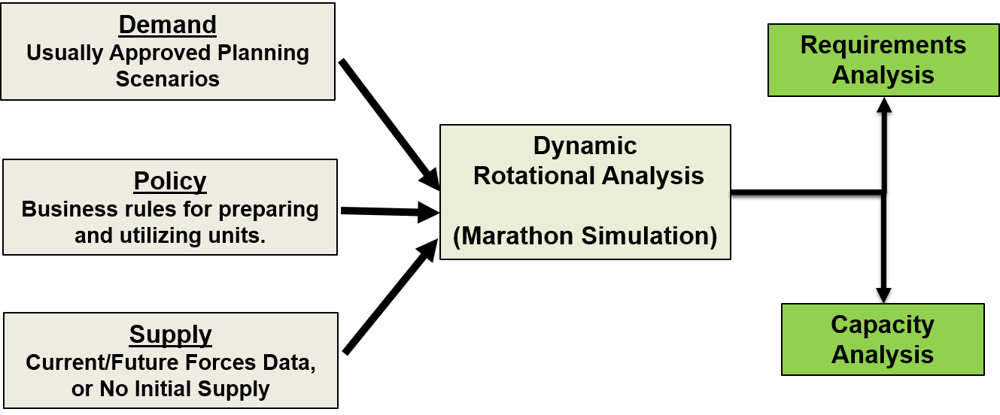
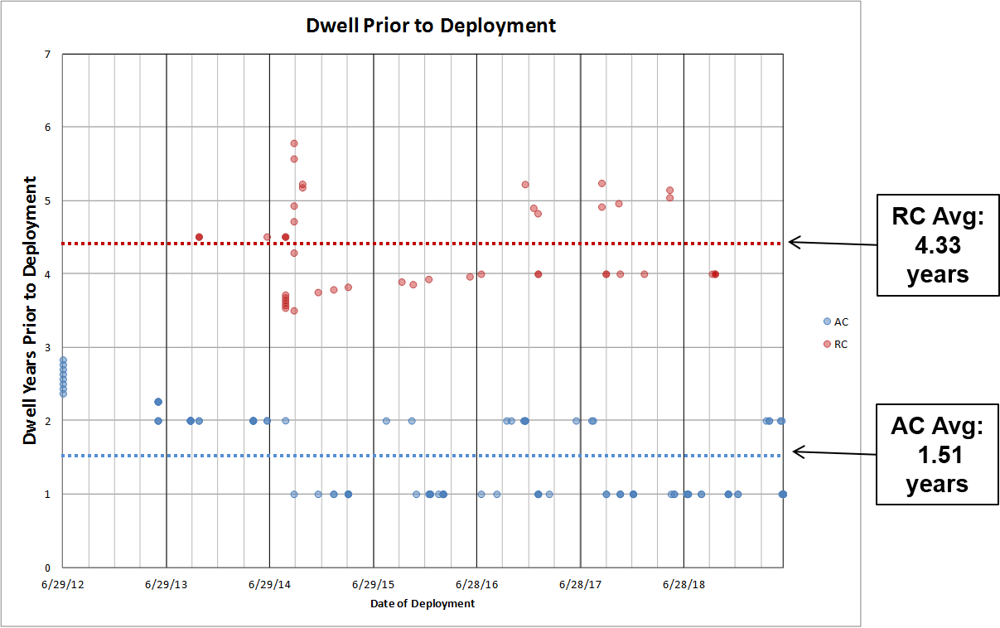
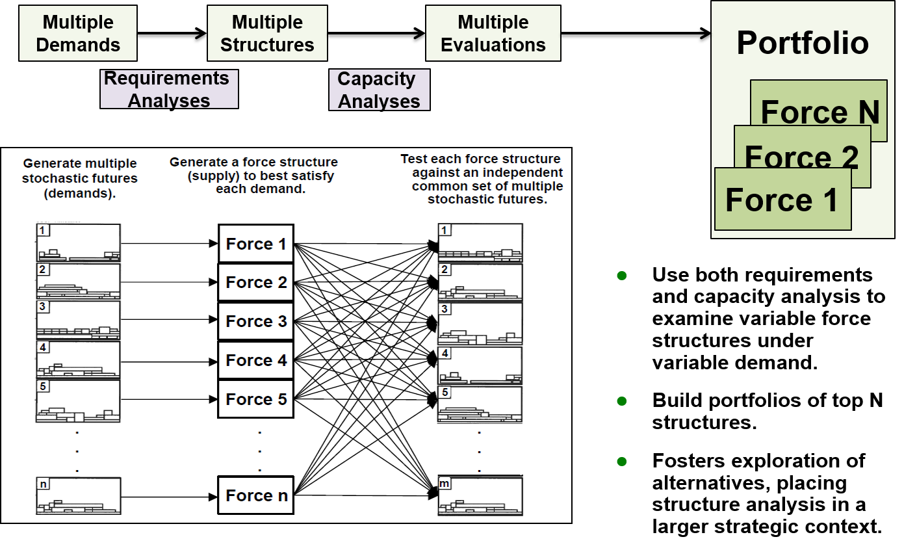

MARATHON Training Slides
Table of Contents
- 1. Overview
- 2. Day 1 - Background Concepts, Data, Typical Analysis
- 3. Background Concepts
- 4. Rotational Analysis
- 4.1. Elements of Rotational Analysis
- 4.2. Scoping
- 4.3. Policy Assumptions
- 4.4. Army Force Generation (ARFORGEN)
- 4.5. ARFORGEN Intent
- 4.6. ARFORGEN Lifecycle
- 4.7. ARFORGEN Policy Example
- 4.8. ARFORGEN Lifecycle Idealized
- 4.9. Ideal ARFORGEN
- 4.10. Static Rotational Analysis
- 4.11. ARFORGEN Algebra
- 4.12. Algebraic Form
- 4.13. Practical Exercise: Theoretical Capacity
- 4.14. Static Analysis Summary
- 4.15. Real ARFORGEN
- 4.16. Dynamic Rotational Analysis
- 4.17. Dynamic Rotational Analysis Ctd.
- 4.18. Dynamic Rotational Analysis Workflow
- 5. MARATHON (Modeling Army Rotation at Home or Not)
- 5.1. What is MARATHON?
- 5.2. MARATHON Origin
- 5.3. How Does MARATHON Work?
- 5.4. MARATHON Demand and Fill
- 5.5. MARATHON Policy
- 5.6. MARATHON Entity Behavior
- 5.7. Dynamic Rotational Analysis with MARATHON
- 5.8. Dynamic Rotational Analysis Overview
- 5.9. Requirements Analysis
- 5.10. RA Example
- 5.11. Capacity Analysis
- 5.12. CA Example
- 5.13. Portfolio Analysis
- 5.14. PA Example
- 6. Using MARATHON
- 7. Practical Example: Notional Capacity
- 8. Practical Example: Notional Requirements (Possibly Day 3)
- 9. Practical Example: Total Army Analysis
- 10. Day 2 - Clojure Orientation and Experimentation
- 11. Rudimentals - Crawling
- 11.1. Development Environment
- 11.2. Companion Clojure Project
- 11.3. Expression
- 11.4. Primitives
- 11.5. Primitives ctd.
- 11.6. Complex Expressions
- 11.7. Vars
- 11.8. Vectors Indicate Bindings
- 11.9. Lexical Scope
- 11.10. Functions
- 11.11. Function Arity
- 11.12. Function Composition
- 11.13. Application with
apply - 11.14. Logical forms,
and,or,not - 11.15. "Truthiness"
- 11.16. Conditional Control,
if,cond,case - 11.17.
ifExamples - 11.18.
cond,case - 11.19. Iteration with
loop/recur - 11.20. Iteration Example
- 11.21.
dothings - 11.22.
evalexpressions - 11.23. Simple Input/Output Via
read,println - 11.24. Build your own REPL
- 11.25. Practical Example: Guess The Number
- 11.26. Guess The Number Ctd.
- 11.27. Practical Example: Turtles
- 12. Rudimentals - Walking
- 12.1. Day 2 Walking
- 12.2. Common Mathematical Functions
- 12.3. More Function Composition
- 12.4. Threading Macros for Functional Pipelines
- 12.5. Threading Macros for Functional Pipelines Ctd.
- 12.6. Sequences
- 12.7. Basic Operations on Sequences
- 12.8. Deriving New Sequences
- 12.9. Sequence Comprehensions with
for - 12.10. More
for - 12.11. Pseudo-Iteration via
doseq,dotimes - 12.12. Constructing Sequences and Vectors
- 12.13. Construction
- 12.14. Indexed Access
- 12.15. Building Sequences Manually With
lazy-seq - 12.16.
map,filter,reduce - 12.17.
map - 12.18.
filter - 12.19.
reduce - 12.20.
reduceExamples - 12.21. Practical Example: FizzBuzz
- 12.22. Maps and Sets
- 12.23. Maps
- 12.24. Maps ctd.
- 12.25. Sets
- 12.26. Strings Revisited and Regexes
- 12.27. More Strings
- 12.28. The Road So Far
- 12.29. Useful Built-ins
- 12.30. More Useful Built-ins
- 12.31. IO (Input/Output)
- 12.32. Simple File Operations
- 12.33. Simple Tab-Delimited Files
- 12.34. Lazy Tab-Delimited Files
- 12.35. Printing Clojure Data to files
- 12.36. IO In Practice
- 12.37. Practical Example: Turtles Redux
- 12.38. Practical Example: Simple statistics
- 12.39. Practical Example: Project Euler (Possibly)
- 13. Day 3 - Extending MARATHON using Clojure (WIP)
- 14. Git Workflow / Version Control
- 15. Hacking MARATHON
- 16. Simple Scripting
1 Overview
1.1 Purpose
This is a preparatory outline of MARATHON training, specifically coverage of a 3-day time-line.
The goal is to provide users with:
- a conceptual understanding of MARATHON and rotational analysis
- a functional understanding of creating MARATHON input data
- executing various forms of analyses
- extending MARATHON via scripting
1.2 Agenda
The agenda is broken out over 3 days:
- Day-1 Background, Concepts, Data, Typical Analysis
- Day-2 Clojure Orientation (and Git)
- Day-3 Extending MARATHON with Clojure
The objective is for participants to gain a grounding in general rotational analysis topics, as well as the available tooling and models.
Finally, we want to build tool-makers, not
just tool-users, so you will be exposed to the programming language
Clojure, and shown how to automate analyses as well as build your
own extensions.
1.3 Daily Schedule
- Class hours will range from 0830-1630, with time off for lunch and periodic breaks.
- We will typically work exercises and activities into the class to prevent mind-rot.
- For the
Clojureportions of the class, expect to spend most of the time inside theClojureREPL(Read Evaluate Print Loop). - Expect to type and interact.
- Questions are generally welcome at any time, unless otherwise stated.
1.4 Prerequisites
This course is intended to provide a comprehensive overview of MARATHON, including its history (i.e. reason for existence), functionality, applicability, and means of extension. No pre-requisite knowledge is required.
That being said, participants will benefit by reviewing references and materials based on interest, with the desire of
- Passing familiarity with Total Army Analysis
- Rudimentary familiarity with Microsoft Excel
- Creating and modifying workbooks, filtering, etc.
1.5 Prerequisites Ctd.
- Rudimentary familiarity with the Clojure programming language
- Familiarity with NightCode as a development environment (very very simple).
- Basic syntax
- The Read Evaluate Print Loop (REPL)
- Defining things.
- Defining functions.
- Working with collections, sequences.
- Rudimentary familiarity with the Git version control system.
- cloning a repository.
- pulling from a repository.
1.6 Online References
- Setting up NightCode
- Getting Started With NightCode https://github.com/ClojureBridge/getting-started/blob/master/nightcode.md
- Clojure
- Clojure Cheat Sheet http://grimoire.arrdem.com/
- ClojureBridge http://clojurebridge.github.io/curriculum/
- Clojure Distilled http://yogthos.github.io/ClojureDistilled.html
- Clojure for the Brave and True http://www.braveclojure.com/
(more at https://github.com/matthiasn/Clojure-Resources/blob/master/README.md)
2 Day 1 - Background Concepts, Data, Typical Analysis
3 Background Concepts
3.1 Army Force Structure (Background)
- Army force structure
- the set of equipment, personnel, and skills that define the US Army
- consists of a daunting set of interacting problems.
- How do you build an army?
- Designing an Army force structure
- consists of a daunting set of interacting problems.
- To handle this fairly complicated process, the US Army regularly analyzes the shape and size of its force structure.
3.2 Army Force Structure Analysis
Analyses must deal with a wide range of force structure decisions, uncertainty about the future, and account for dynamics between force structure decisions.
3.3 Force Structure Analysis Components (Demand, Supply, Policy)
There are a number of practical concerns that will be addressed in any force structure analysis.
- Demand
- Supply
- Policy
3.4 Demand
Demand for Army force structure is fundamental to determining a force structure.
Given an expected strategic environment, it is possible to derive a formal specification for both the size and the shape of the force structure necessary to satisfy the strategic goals of said environment, for notional example:
- A portion of a warfight may requires the firepower of 1 IBCT, and lasts for 2 days.
- An emergency relief effort may require the HQ of 1 IBCT for 6 months.
Demands also have additional considerations:
- all force structure demands are not equal
- there typically exists some notion of value or priority
associated with specific scenarios.
- ex. Large conflicts, or defense of the homeland, will likely take an overriding priority over training operations.
3.5 Supply
Army force structure is also determined by a complex system of legal, budgetary, and political constraints, which correspond to a notion of the supply of Army assets:
- authorized end-strength for the Army, which provides an upper bound on any feasible force structure.
- Some elements of supply may not be fungible, and act as constants in any force structure.
- exogenous political constraints abound, and are usually outside the scope of most force structure analyses.
3.6 Policy
Policy provides a set of relations between supply and demand, as well as the constraints that determine the availability of supply.
Typically, policy constraints on supply availability are:
- Readiness:
- A system for generating force structure
- Elements of the supply are ”made ready” for application against relevant demands.
- Substitutions:
- viable substitutions between different capabilities in the supply
- the relative value (or cost) of applying substitute supply to demand.
4 Rotational Analysis
4.1 Elements of Rotational Analysis
- Analysis typically relates supply to demand, constrained by policy
- Most analyses are variations of the roles played by each:
- If we know supply, demand, and policy, we can vary policy.
- If we don't know supply, we can find possible supplies relative to demand and policy.
- Varying demand, holding policy and supply constant provides sensitivity analysis of the supply.
4.2 Scoping
Analysis typically focuses on a subset of the Force Generation process
- generally holds many gross assumptions about the behavior of quite complex subsystems
- training, manning, equipment, mobilization, etc.
Implications:
- Scopes to unit level-of-detail
- complex subsystems like equipping and manning abstracted away
- or delegated to external models
- variety of supply, demand, and policy options is still staggering.
4.3 Policy Assumptions
The policies for managing the force generation process have historically varied:
- Tiered Readiness
- Cyclical Readiness
- Mixtures
Primary policies of note:
- Army Force Generation (ARFORGEN)
- Predominant policy for the last decade
- Sustainable Readiness Model (SRM)
- Upcoming policy, replacement for ARFORGEN
4.4 Army Force Generation (ARFORGEN)
ARFORGEN is a system for managing readiness - the ability for units to deploy to meet contingencies.
- contemporary cyclical force generation process
- structured progression of increased unit readiness over time
- results in the periodic availability of trained, ready and cohesive units
- prepared for operational deployment
- support of civil authorities or combatant commander requirements.
- MARATHON was initially designed to analyze ARFORGEN
- Capable of examining arbitrary policies (like SRM).
4.5 ARFORGEN Intent
- ARFORGEN seeks to
- synchronize individual sourcing, manning, equipping, and training processes
- ensure a continuous supply of forces
- transition the Army from a system focused on surging forces to war to a system for sustained operations.
- The goal of ARFORGEN
- Provide a consistent and predictable supply of units ready to deploy to meet contingencies.
4.6 ARFORGEN Lifecycle
- Units accumulate resources and training as they accumulate time in the lifecycle,
- Progress through the abstract ARFORGEN phases:
- Reset, Train, Ready, and Available.
- At the beginning of a unit’s ARFORGEN lifecycle, the Reset phase, units
- lack equipment, personnel, and training
- lowest relative state of readiness.
- In the available phase, units are
- at the highest level of readiness
- best suited to deploy
4.7 ARFORGEN Policy Example



4.8 ARFORGEN Lifecycle Idealized
After the Available phase, units begin a new lifecycle
- lose equipment, personnel, and readiness as they transition to the Reset phase.
In theory, distributing units uniformly across ARFORGEN lifecycles – an ideal ARFORGEN state –
- enforces equal opportunity for training, deploying, and resetting across the unit supply
- ensures a static (consistent) supply of units in each ARFORGEN phase.
4.9 Ideal ARFORGEN

Figure 4: Static Rotational Analysis and Ideal ARFORGEN
4.10 Static Rotational Analysis
Given idealized assumptions:
- Supply is "evenly" distributed across the lifecycle length
- Units are not deployed “out of cycle”
Static rotational analysis examines force generation through
- theoretical capacities
- variable rotational discounts
4.11 ARFORGEN Algebra
total rotational supply
- Quantity of units following the same policy.
rotational discount
- dimensionless quantity,
- ranging between 0 and 1,
- proportion of a unit’s available time relative to lifecycle time.
theoretical capacity
- the expected number of units available at any time
relative to a total rotational supply and a unit lifecycle
- calculated by discounting the total rotational supply.
available time
- factors that increase available time (e.g. time in the available phase)
overlap
- factors decreasing available days (e.g. time for rip/toa)
4.12 Algebraic Form
4.13 Practical Exercise: Theoretical Capacity
We have 30 AC BCTs following
- a 24-month lifecycle
- 12 months of availability
- 9 months of possible BOG
- 45 day RIP/TOA
And 30 NG BCTS following
- a 60-month lifecycle
- 12 months of mobility
- 9 months possible BOG
- 3 months accounting for MOB/DeMOB
- 45 day RIP/TOA
Can we supply a 15 BCT steady-state demand?
4.14 Static Analysis Summary
- Closed Form (Typically Algebraic)
- Ignores dynamics (i.e. temporal effects).
- Significant simplifying assumptions
- Ex. Assume equilibrium under ARFORGEN
- results in fixed pools of supply in available, ready, reset states.
- Useful for quick approximations
- Also useful for determining bounds.
4.15 Real ARFORGEN

Figure 5: Dynamic Rotational Analysis and Real ARFORGEN
4.16 Dynamic Rotational Analysis
- Ideal ARFORGEN has yet to be achieved , let alone maintained
- static rotational analysis cannot validly answer questions about real ARFORGEN
- state of supply, demand, and policy is dynamic, non-ideal
- Dynamic rotational analysis (or dynamic analysis) accounts for
- changes in the force generation system and non-ideal states
- bridges the gap between theoretical ideal and the empirical reality
- observation of supply, demand, or policy scenarios that vary as a function of time or event
- illuminates unforeseen consequences via second and third order effects
4.17 Dynamic Rotational Analysis Ctd.
Dynamic analysis utilizes some form of simulation, optimization, or difference equations to generate multiple sequentially-dependent states of the rotational system.
4.18 Dynamic Rotational Analysis Workflow

Figure 6: A possible workflow for dynamic analysis.
5 MARATHON (Modeling Army Rotation at Home or Not)
5.1 What is MARATHON?
- A mechanism for Dynamic Rotational Analysis where
- supply is a set of potentially deployable units
- demand is a set of activities requiring a unit
- policy is a collection of rules or constraints that determine a unit’s ability to fill a demand.
- MARATHON seeks to:
- validly simulate the "physics" of Army supply and demand
- governed by policy
- analyze the effects of changes in supply, demand, or policy.
Ultimately, MARATHON is an analytic sandbox for evaluating courses of action relative to Army Force Structure and Force Generation.
5.2 MARATHON Origin
CAA created MARATHON to analyze dynamic force management under ARFORGEN.
- MARATHON performs dynamic analysis through a combination of discrete-event simulation an on-line optimization.
- simulates the deployment of rotational operating force units
- meet operational demands over time
- based on specified ARFORGEN (or other) rotation policies.
- simulates the deployment of rotational operating force units
Marathon illuminates the differences between theoretical rotational capacities, and rotational capacities stemming from non-static system conditions such as
- historic deployments and surges
- dynamic changes in supply, policy, or demand.
5.3 How Does MARATHON Work?
Marathon simulates the force generation process through a coordinated set of supply, demand, and policy simulations.
- The supply system coordinates
- unit availability,
- disseminating supply simulation events,
- unit entity telemetry (position, location, etc.).
Thousands of unique unit entities
- follow global (shared) or local (unique to the unit) rotational policies
- are governed by one or more supply systems
- executes the “supply physics” dictated by the corresponding policy.
- provide simulated histories that can be traced, recorded, and reacted to.
5.4 MARATHON Demand and Fill
Demands are
- activated or deactivated
- slated for filling
- based on a - potentially sophisticated - user-defined priority function.
The fill system
- matches the highest priority demand to the most suitable supply as needed,
- directs the transition of units from the supply system to deployments
- accounts for
- potentially complex unit substitution rules
- demand preferences
- almost any value function associated with the selection of units to fill demands.
5.5 MARATHON Policy
Finally, a policy system accounts for changes to policy like
- ARFORGEN suspension
- variation in lifecycle length
- changes in deployment time
by system-wide policy changes
- Policy changes automatically filter down to subscribing units,
- enables a rich and diverse simulation of the supply-policy-demand dynamics.
5.6 MARATHON Entity Behavior
Unit rotational policy generally consists of a directed sequence of states and durations.
- entirely modular and variable
Units also have a variable behavior
- interprets policy to implement the desired supply-side and deployed actions.
Decoupling behavior and policy allows for
- homogeneous sets of units that appear to behave identically
- diasporas of independent singletons that can apply similar behavior to different policies
- or interpret the same policies (via different behavior)
- simulating radically different populations with precise control
The potential for unique entities allows flexibly account for the legion of subtleties and corner-cases in rotational analysis.
5.7 Dynamic Rotational Analysis with MARATHON
CAA uses Marathon to perform distinct classes of dynamic analysis:
- Requirements Analysis
- Capacity Analysis
- Portfolio Analysis
Given the three primary elements in any rotational analysis – supply, demand, and policy – we can perform different classes of analysis by treating the elements as unknowns (i.e. variables)
- determined through experimentation or calculation.
5.8 Dynamic Rotational Analysis Overview

Figure 7: Dynamic Rotational Analysis
5.9 Requirements Analysis
- Requirements Analysis treats supply as an unknown
- searches the space of force structure allocations that result in a minimum feasible supply
- relative to a known demand and policy.
- minimum feasible supply is capable of meeting the entirety of the demand.
- answers the question: “How large a force does the Army need in this context? ”
5.10 RA Example

Figure 8: Requirements Analysis Algorithm
5.11 Capacity Analysis
Capacity Analysis treats supply, demand, and policy as known.
- unknown variable is the performance of the rotational supply
- the effective rotational capacity of the supply relative to demand constrained by policy.
- Performance is measured in a variety of ways
- unit dwell
- demand fill.
- answers the question “How much can the Army do with a particular force?”
5.12 CA Example

Figure 9: Dwell Before Deployment
5.13 Portfolio Analysis
Portfolio Analysis is higher-order form of analysis
- uses Requirements Analysis and Capacity Analysis
- respectively generate and evaluate multiple supplies - the portfolio
- may treat both supply and demand as variables.
- recent applications of Portfolio Analysis focus on building and evaluating portfolios relative to stochastic demands.
- answers the question:
- “Given a plethora of possible demand inputs, what kind of force structure would have robust performance across the inputs?”
5.14 PA Example

Figure 10: Capacity Analysis
6 Using MARATHON
6.1 MARATHON Input
6.2 MARATHON Input ctd.
- Policy
- PolicyRecords
- Parametric sets of policies compiled at runtime
- CompositePolicyRecords
- Data-driven compositions of policies defined by PolicyRecords
- RelationRecords
- Weighted substitution relationships.
- SRCTagRecords
- Defines "alternate" policy defaults for specific SRCs.
- PeriodRecords
- Defines named simulation epochs, by time interval.
- Periods may be linked to changes in composite policies.
- PolicyRecords
6.3 SupplyRecords
6.4 DemandRecords
- BMCOL
- Type :text
- Enabled :boolean
- Priority :int
- Quantity :int
- DemandIndex :int
- StartDay :int
- Duration :int
- Overlap :int
- SRC :text
- SourceFirst :text
- DemandGroup :text
- Vignette :text
- BMCOL
- Operation :text
- Category :text
- Priority :int
- Command :text
- Location :text
- DemandType :text
- Theater :text
- BOG :boolean
- StartState :text
- EndState :text
- MissionLength :int?
6.5 PolicyRecords
6.6 CompositePolicyRecords
- Type :text
- CompositeName :text
- CompositionType :text
- Period :text
- Policy :text
6.7 RelationRecords
- Type :text
- Relation :text
- Donor :text
- Recepient :text
- Cost :float
- Enabled :boolean
6.8 Remaining
6.9 MARATHON Output
- Deployments
- individual unit deployments
- DemandTrends
- discrete sampling of changes in demand
- Deployed
- daily sampling of the deployed population
- Locations
- daily sampling of evey unit's location.
- History
- compressed stream of simulation history
- we can compute more ouput on this later
- Much more if we use
procfor post processing…
7 Practical Example: Notional Capacity
7.1 Practicale Example: Notional Capacity
- Look at "srmbase" project.
- Examine Supply, Demand, Policy
- Processing -> Capacity Analysis.
- Analyze results the "hard" way
- Use Excel (and the provided template) to pull in data.
- Are we filling demands according to the data?
- What do we know about stress on the supply based on dwell?
- Any other observations?
8 Practical Example: Notional Requirements (Possibly Day 3)
8.1 Notional Requirements Analysis
8.2 Analyze Results
9 Practical Example: Total Army Analysis
9.1 TAA Example
9.2 Analytic Pipeline for TAA
The Army favors a pipelined approach for large-scale force structure analysis. This analytic pipeline serves as a mechanism for composing processes - primarily simulations
- spanning varying levels of detail and analytic domains.
- complex simulations that represent Army doctrine and business rules
- system simulations
- tactical combat model
- campaign level combat models
- deterministic optimization models
- mobility
- flow models
- equipping
- personnel assignment
- Wargaming
9.3 Representing Demand
- The majority of the pipeline exists to build a valid
demand future:- a set of force structure requirements defined over time.
- distills high-fidelity, large-scale, and complex campaign analysis
- produces a relatively simple set of time-varying demands for force structure.
Surgedemand signal(s) are the primary modeling effort:- Driven by Army doctrine, combat models, and Rules of Allocation for support structure, etc.
- Conveys the assumptions, constraints, and findings of the entire pipeline.
- Typically large-scale, important contingency events.
9.4 Demand ctd.
- Smaller demands, aka
vignettes, also show up:- vignettes manifest as force structure lists
- typically developed by wargaming vs. modeling.
- derived from the Support to Strategic Analysis (SSA) process.
- Demands are selected and arranged according to timing:
- Demands are building blocks, the timing arranges them.
- Resulting arrangement is assumed to be a valid representation of expected force structure demand
9.5 TAA Supply
10 Day 2 - Clojure Orientation and Experimentation
10.1 Day 2 - Clojure Orientation and Experimentation
- We're going to get familiar with clojure.
- Enough to make you "dangerous," ideally able to continue on your own.
- Teach someone to fish…
- Goal is to cement familiarity, not expertise.
- Core concepts, big ideas
- Most importantly, things you will/can use in day-to-day tasks
- View clojure as a force multiplier
- Aim to build incrementally, starting with primitive topics
- Crawl, walk, run.
- We will short-change a lot of really cool, beautiful topics out of
pragmatism.
- Macros, homoiconicity, dynamic scope, domain-specific-languages, communicating sequential processes, software transactional memory, more.
- Ask for references if you're interested in pursuing this.
11 Rudimentals - Crawling
11.1 Development Environment
- NightCode
- Should already be loaded and rolling.
- Holler if you're having problems.
- Simple interface -Syntax highlighting / parenthesis balancing (really helpful) -Portable (implemented in Java/Clojure)
- Not the only way to go
- Emacs is superior of course
- Vim is a heretical alternative
- Cursive Clojure, Eclipse also have market share
- People seem to really like Cursive, based on IntelliJ Idea
11.2 Companion Clojure Project
11.3 Expression
- Clojure is a language, like English
- where we - hopefully - can easily express useful bits of information
- elegantly and efficiently.
- Interaction with the REPL is a conversation.
- Other side speaks / reads Clojure.
- Our goal is to learn to express ourselves (or our problems)
- Ideally in terms humans can understand without too much trouble.
11.4 Primitives
Booleans
true, false ;nil nil
Characters
\a, \b, \c, \d, \e, \f, \g
Strings
"I am a string" (seq "I contain characters") ;(\I \space \c \o \n \t \a \i \n ; \space \c \h \a \r \a \c \t \e \r \s)
11.5 Primitives ctd.
11.6 Complex Expressions
Lists are fundamental means of expression.
- Denoted by outer parenthesis ()
(this is a list)
Quoted Lists are data.
'(+ 2 3)
Unquoted Lists passed to the REPL are evaluated as "forms", clojure expressions.
- First element is evaluated
- Applied to the remaining evaluated elements.
(+ 2 3) ;=>5 (list 1 2) ;=> (1 2)
11.7 Vars
Symbols must be defined, i.e. bound, to some value.
- Bound symbols are called vars.
- Use the
defform to define global vars. - Use the
letform to establish local bindings. - vars evaluate to the value they were associated with at definition time.
(def x 2) (let [y 10] (+ x y)) ;=> 12
11.8 Vectors Indicate Bindings
Vectors provide another way to collect things:
- Denoted by []
- Provide numerous benefits as a data structure
Never interpreted as forms, always treated as data.
- Used instead of quoted lists.
- Required by core libraries to indicate var bindings.
[0 1 2 3 4] ;=> [0 1 2 3 4] [:a 2] ;=> [:a 2] (vector "build" "me") ;=>["build" "me"] (let [x 2] x) ;=>2
11.9 Lexical Scope
Vars are lexically scoped.
- Only visible within the body of the context in which they're bound (lexical environment).
- Undefined vars (i.e. unquoted symbols) trigger exceptions.
- Inner bindings can "shadow", or override outer bindings in the lexical scope of the inner binding.
(def state "Texas") (let [state "Virginia"] state) ;=> "Virginia" state ;=> "Texas"
11.10 Functions
Functions are the bread-and-butter of getting stuff done in clojure.
- Along with lists (forms).
Define anonymous functions with (fn [& args] body) form.
((fn [x] (+ x 2)) 2) ;=> 4
Define named functions
(def add-two (fn [x] (+ x 2))) ;;same result, with a docstring.. (defn add-two "Add two to the input" [x] (+ x 2))
11.11 Function Arity
Functions can have multiple "arities", or argument bindings.
- Use a list of ([bindings] body) for each arity.
- Denote "list" of arguments with [& something]
- Tells clojure to collect the items after & and dump them into a list bound to "something"
- Example of destructuring, more on this later.
(defn variadic ([x] (println (str "you called me with 1 arg, " x))) ([x y] (println (str "you called me with 2 args: " [x y]))) ([x y & more] (println (str "you called me with >2 args: " (into [x y] more))))) (variadic 1) ;=> you called me with 1 args: 1 (variadic 1 2) ;=> you called me with 2 args: [1 2] (variadic 1 2 3 4 5 6) ;=> you called me with >2 args: [1 2 3 4]
11.12 Function Composition
Functions are a useful abstraction because they compose easily.
- Style of programming called "functional programming"
- Underlying philosophy in clojure.
- Define complex functions by composing simple functions.
(defn square [x] (* x x)) (defn distance [[x1 y1] [x2 y2]] (Math/sqrt (square (- x2 x1)) (square (- y2 y1)))) (defn normal [[x y]] (let [d (distance [0 0] [x y])] [(/ x d) (/ y d)]))
11.13 Application with apply
We can use the apply form to apply a function to a
sequence of arguments
- as if the function were invoked with the arguments.
(apply + [1 2]) ;3 (apply * [2 4 6 8]) ;384 (apply * '(0.5 0.5 0.5)) ;0.125 (apply list [1 2 3 4 5 6]) ;(1 2 3 4 5 6)
11.14 Logical forms, and, or, not
Logical operations are "short-circuiting"
- evaluation will return if any sufficient criteria are met
- remaining clauses are not evaluated
(and true false) ;false (and false (fn [] (println "launch!") true)) ;false (or true false) ;true (or true (fn [] (println "eject!") false)) ;true (not true) ;false (not false) ;true
11.15 "Truthiness"
Clojure allows things that don't look like true or false
to denote true and false.
- Eliminates a surprising amount of boiler plate since we
don't bother to explicitly check for
trueorfalse - Any expression that evaluates to a value "other" than
false or
nilis considered logically equivalent totrue
(and true [1]) ;[1] => true (and true nil) ;nil => false (and nil) ;nil => false (and 2 :a) ;:a => true (or false nil :B false) ;:B => true (and [1 2 3] false) ;false (or [1 2 3] [4 5 6]) ;[1 2 3] => true
11.16 Conditional Control, if, cond, case
The if form takes a predicate, and two alternate
bodies to evaluate depending on the truth of the predicate.
(println (if true "it was true" "it was false")) ;it was true (println (if false "it was true" "it was false")) ;it was false (println (if nil "it was true" "it was false")) ;it was false
11.17 if Examples
(defn between? [lower upper x] (and (> x lower) (< x upper))) (if (between? 0 20 10) (println "all-clear!") (println "launch the missiles!")) (if (first [nil 1 2]) :first-exists :first-is-nil) ;:first-is-nil (if-let [x (first [1 2])] x :first-is-nil) ;1
11.18 cond, case
cond and case are useful variants of if
condallows multiple conditions to be sequentially checked, and if true, evaluates the adjacent body.caseallows us to condition based on a specific value and set of defined cases
(cond (between? 20 40 10) :a (between? 40 42 10) :b (= 10 10) :ten :else (println "launch the missiles!")) (case 42 0 :zero 10 :ten 42 :forty-two :dunno)
11.19 Iteration with loop/recur
Clojure provides us with the loop/recur idiom.
- Inside of a (loop [& bindings] & body) form, we can re-enter the loop
- using the (recur & bindings) form.
;;Count to ten... (loop [idx 0] (if (= idx 10) [:done idx] (recur (+ idx 1))))
11.20 Iteration Example
Loops tend to be primitive, but they are extremely useful.
- We will revisit this example using a much cleaner method based on functions.
11.21 do things
The do form allows us to evaluate a sequence of forms
- ignores intermediate results
- returns the last evaluated result
- useful for performing spooky "side effects" like printing
11.22 eval expressions
The eval form allows you to evaluate arbitrary expressions.
- the E in REPL
- interprets clojure forms, returning a result
- this mechanism is very powerful
(eval 2) ;2 (eval '(+ 2 3)) ;;5 (eval (list 'list 2 3 4 ''x)) ;;(2 3 4 x) (eval (list 'def 'x 2)) ;;#'training.expression/x x ;;2
11.23 Simple Input/Output Via read, println
Clojure provides full access to the same functionality that
the REPL uses to read input and coerce it into clojure expressions.
read lets us collect a line of input from the user:
(read)
println evaluates the expression, and prints the result with a new line.
(println (+ 2 3))
11.24 Build your own REPL
(defn repl [n] (loop [remaining n] (if (zero? remaining) :done (do (println (eval (read))) (recur (dec remaining)))))) (repl 2)
11.25 Practical Example: Guess The Number
Given a simple prompt, msg
- prompts the user enter y or n
- parses the result into a keyword :yes or :no, or exception.
(defn read-yes-no [msg] (println (str msg ", answer y|n")) (case (keyword (read)) :y :yes :n :no (throw (Exception. (str "bad-input!")))))
11.26 Guess The Number Ctd.
Given a lower and upper bound
- Repeatedly tries to guess the number using binary search.
- Recursively calls itself
(defn pick-number [lower upper] (let [half-length (quot (- upper lower) 2) guess (+ lower half-length )] (case (read-yes-no (str "is your number " guess " ?")) :yes (println "Thanks for playing!") :no (case (read-yes-no (str "Is your number less than? " guess)) :yes (pick-number lower (dec guess)) (pick-number (inc guess) upper)))))
11.27 Practical Example: Turtles
- The Logo "turtle"
- a useful pedagogical tool
- Visual representation of the state of computation
- It's fun to move around and draw stuff
- As the turtle moves, it draws colored lines.
- Get some mileage under your fingers
- Open up the project in training/turtles/example.clj
- BMCOL
Navigation
- (forward x)
- (backward x)
- (left degrees)
- (right degrees)
- BMCOL
Cleanup
- (clean)
- (home)
12 Rudimentals - Walking
12.1 Day 2 Walking
Our goal is to quickly explore useful functions clojure provides, namely for working with sequences.
- Spend the rest of the time working examples.
- Do some mental "road work"
- Build up to scripting exercises
12.2 Common Mathematical Functions
- BMCOL
(+ 2 3) ;5 (* 2 3) ;6 (/ 2.0 3.0) ;0.666666... (/ 2 3) ;2/3 (Math/pow 2 3); 8.0 (Math/sin Math/PI) ;1.2246467991473532E-16 (Math/cos Math/PI) ;-1.0
- BMCOL
;;compute remainder ;;using mod (mod 10 3) ;1 ;;or use quot and rem (quot 10 3) ;3 (rem 10 3) ;1 (defn divides-by? [x n] (zero? (rem x n))) (divides-by? 10 2) ;true (divides-by? 10 3) ;false
12.3 More Function Composition
(let [f (fn [x] (+ x 2)) g (fn [x] (* x 4)) h (fn [x] (Math/sqrt x)) i #(Math/pow % 3) ;fn syntax sugar ihgf (compose i h g f)] ;direct composition (i (h (g (f 10)))) ;using a composed function (ihgf 10)
12.4 Threading Macros for Functional Pipelines
thread-first, ->
- threads the result of each preceding form as
the second argument of the next.
- f(x) = 2 * x2 + 2
- f(4) = ?
12.5 Threading Macros for Functional Pipelines Ctd.
thread-last, ->>
- threads the result of each preceding form as the last argument of the next form.
12.6 Sequences
Almost every clojure data structure that serves as a collection can be viewed through the Sequence abstraction.
A sequence is a "lazily" computed stream of values
- The source of the sequence is traversed on-demand
- Sequences look and act like lists.
- Except they are "lazy" vs "Eager".
- We only realize portions of the sequence we need
- We can work with "infinite" data structures
12.7 Basic Operations on Sequences
;;lazy sequence of numbers from [0..bound) (def numbers (range 100)) ;count the elements in the sequence (count numbers) ;100 ;;get the first element... (first numbers) ;;get the remainder of the sequence, dropping ;;the first element (next numbers) ;akin to (rest numbers) ;;get the nth element (nth numbers 20) ;;get the last element (last numbers) ;;get a seq over a collection (seq [1 2 3]) ;(1 2 3)
12.8 Deriving New Sequences
;;draws the first 10 elements and stops (take 10 numbers) ;;drops the first 10 elements (drop 10 numbers) ;;Clump the sequence into pairs (partition 2 numbers) ;;Return a view of the sequence ;;akin to a moving window (partition 2 1 numbers) ;;Generate a sequence using a function (take 10 (iterate (fn [x] (* x 10)) 1)) ;;Concatenate sequences (concat [:A :B :c] '(:d :e :f))
12.9 Sequence Comprehensions with for
We can use the (for [bindings] & body) form to declaratively dissect sequences and return a new lazy sequences:
;;return a sequence of numbers from (0..9) (for [x (range 10)] x) ;;returns the Cartesian product of xs and ys as ;;a lazy sequence of vector pairs (for [x (range 10) y [:a :b :c]] [x y])
12.10 More for
;;limit the draws to odd values of x using :when (for [x (range 10) y [:a :b :c] :when (odd? x)] [x y]) ;;introduce lexical bindings using :let (for [x (range 10) y [:a :b :c] :when (odd? x) :let [xx (* x x)]] [xx y])
12.11 Pseudo-Iteration via doseq, dotimes
;;traverse sequences using do-seq, ;;good for side-effects. ;;Uses the same binding options as for.. (doseq [x (range 10)] (println x)) ;;use dotimes to evaluate the body n-times, ;; basically syntax sugar around loop (dotimes [i 10] (println i))
12.12 Constructing Sequences and Vectors
conj is the general mechanism for
conjoining elements to collections
- constructs a "new" collection with the conjoined element
- original is preserved (unaltered)
- For uniformity,
nilis treated as the empty-sequence
conj has different behavior based on the data structure
- lists (eg. seqs) conjoin by pre-pending items to the head
- vectors conjoin by appending items to the tail
cons is a sequence-specific alternative to conj that
constructs new sequences
12.13 Construction
(conj [] 2) ;[2] (conj [2] 3) ;[2 3] (conj '() 2) ;(2) (conj '(2) 3) ;(3 2) (cons 2 '()) ;(2) (cons 3 '(2)) ;(3 2) (cons 4 '(3 2)) ;(4 3 2) (conj nil 2) ;(2) (def xs (list 1 2 3)) (def ys (rest xs)) xs ;(1 2 3) ys ;(2 3)
12.14 Indexed Access
Use nth for indexed access into vectors and sequences
- note: indexing into large lists may be slow (why?)
(nth [0 1 2 3] 0) ;0 (nth [0 1 2 3] 1) ;1 (nth [0 1 2 3] 3) ;3 (nth '(:a :b :c) 2) ;:c
12.15 Building Sequences Manually With lazy-seq
(defn my-range ([bound n] (when (< n bound) (lazy-seq (cons n (my-range bound (inc n)))))) ([bound] (my-range bound 0)))
12.16 map, filter, reduce
12.17 map
"Maps" a function onto a sequence of values.
- We can view mapping as a transformation of the input sequence
- The elements of the returned
sequence are elements of the original sequence
- after applying a function to them.
(map (fn [x] (+ x 2)) (range 10)) (map (fn [x] [x x]) (range 10)) ;;We can map across multiple sequences ;;simultaneously, and provide a function ;;that takes multiple args.. (let [xs (range 10) ys (repeat 2) zs (repeatedly (fn [] (rand-int 100)))] (map (fn [x y z] (+ x y z)) xs ys zs))
12.18 filter
filter constructs a new sequence from a predicate function and a sequence
- The resulting sequence only has elements that "passed" the filter
- when the filter function was applied to the element, returned a non-false value
;;Filter the sequence, retaining only odd numbers. (filter odd? (range 10)) ;(1 3 5 7 9) ;;Filter evens (filter even? (range 10)) ;(0 2 4 6 8)
12.19 reduce
Reduce allows us to accumulate a result across a sequence, thereby "reducing" the sequence to a single resulting value.
- takes a reducing function
- (fn [acc x] …)
- "Accumulator" is first argument, second argument is the current value being reduced (i.e. element in a list).
- can be called with or without an initial value for the reduction.
- no initial value => use the first element of the thing being reduced.
12.20 reduce Examples
(defn sum-numbers [xs] (reduce + xs)) (sum-numbers numbers) (defn randomly-sample [xs] (reduce (fn [acc x] (if (> (rand) 0.5) (conj acc x) acc)) [] xs)) (->> (range 10000) (filter odd? ) (map (fn [x] (/ x 10.0))) (reduce +)) ;2500000.0
12.21 Practical Example: FizzBuzz
Tell the REPL how to do the following:
- Print all the numbers from 0..100 (including 100)
- Except…
- For every number that is a multiple of 3
- Print "Fizz" instead of the number
- For every number that is a multiple of 5
- Print "Buzz" instead of the number.
- For evey number that is a multiple of
3 AND 5
- Print "FizzBuzz"
- For every number that is a multiple of 3
12.22 Maps and Sets
Clojure provides implementations of data structures that represent sorted/unsorted associative maps and sets.
- maps associate a key to a value
- effectively Sets of [ key value ] pairs.
- no duplicate keys.
- sets are analogous to mathematical sets, but store any
type of clojure data structure
- support union, intersection, and other set-theoretic operations
- no duplicate entries.
- Both types are compatible with sequences.
12.23 Maps
Because they are so useful and common, Clojure provides a syntax for them:
- maps are sequences of key / value pairs surround by {} braces.
(def the-map {:first-key "first-value" :second-key "second-value"}) (keys the-map) ;(:first-key :second-key (vals the-map) ;("first-value" "second-value") (get the-map :first-key) ;"first-value" (get the-map :second-key) ;"second-value" (contains? the-map :third-key) ;false (map the-map [:first-key]) ;["first-value"]
12.24 Maps ctd.
(def new-map (assoc the-map :third-key 3)) (def newer-map (dissoc the-map :first-key)) (get new-map :third-key) ;3 (get newer-map :third-key) ;nil (get newer-map :first-key) ;nil (get newer-map :third-key) ;3 (newer-map :third-key) ;3 (seq newer-map) ;([:second-key "second-value"]) (into {} [[:a 0] [:b 1]]) ;{:a 0 :b 1} (hash-map :a 0 :b 1) ;{:a 0 :b 1}
12.25 Sets
Sets also have their own syntax:
- sequences of values inside #{} are read as sets.
(def s (conj #{} :a)) (contains? s :a) ;true (s :a) ;:a (filter s [:a :b :a]) ;[:a :a] (def s2 #{:a :b :c}) (clojure.set/union s s2);#{:c :b :a} (clojure.set/intersection s s2);#{:a} (clojure.set/difference s2 s); #{:b :c} (into #{} [:a :a :a :a :b]) ;#{:a :b}
12.26 Strings Revisited and Regexes
Strings are prevalent in a lot of processing tasks, so Clojure has a array of functions for dealing with them.
- Of note, regular-expressions are related to processing strings.
- Regular expressions are delimited by #"…"
- we will not spend time on Regexes unless necessary
- i.e. library usage requires them
(seq "Hi") ;(\H \i) (nth "Hello" 3); \l (clojure.string/replace "Hello" "e" "a") ;"hallo" (clojure.string/upper-case "hello") ; "HELLO" (clojure.string/lower-case "Hello") ; "hello"
12.27 More Strings
(str "h" \i [:not-a-string]) ;"hi[:not-a-string]" (clojure.string/join "," ["x" "y" "z"]) ;"x,y,z" (clojure.string/join \newline ["x" "y" "z"]) ;"x\ny\nz" (clojure.string/split "x,y,z" #",") ;["x" "y" "z"] (defn line->tabs [ln] (clojure.string/split ln #"\t")) (line->tabs (clojure.string/join \tab [1 2 3])) ;["1" "2" "3"]
12.28 The Road So Far
We have quite an arsenal of expression by now:
- integers, floats, strings, booleans
- keywords, quoted symbols
- Sequences (lists, vectors, maps, sets)
- Functions
We've also seen that Clojure provides a fairly large standard library for working with these data types.
- "Id rather have 100 functions working on a single data type"
- [some hippy]
We'll explore a few more useful functions, then move on to examples
- where we can apply what we've seen
12.29 Useful Built-ins
(def xs (range 3)) (group-by odd? xs) ;{false [0 2], true [1]} (group-by (fn [x] (if (odd? x) :odd :even)) xs) ;{:even [0 2], :odd [1]} (partition-by #(< % 4) (range 5)) ;((0 1 2 3) (4)) (map-indexed (fn [idx x] [idx x]) xs) ;;([0 0] [1 1] [2 2])
12.30 More Useful Built-ins
(def m {:a {:b 1}}) (assoc-in m [:a :c] 2) ;{:a {:b 1 :c 2}} (update-in m [:a :b] inc);{:a {:b 2}} (update-in m [:a :b] + 2) ;{:a {:b 3}} (get-in m [:a :b]) ;1 (vec (range 2)) ; [0 1] (vec #{:a :b}) ; [:b :a] (into [] #{:a :b}; [:b :a] (into [] (map inc) (range 2)) ;[1 2] (into [:z] {:a 2 :b 3}) ;[:z [:a 2] [:b 3]]
12.31 IO (Input/Output)
IO in clojure parlance typically refers reading (input) or writing (output) data to a "stream".
- typical streams include files, network sockets
- There are two defined streams:
*in*the stream the REPL's process draws from*out*the stream the REPL prints to- notice the asterisk around in and out
- naming convention (earmuffs) to indicate that the Vars are "dynamically scoped"
- more to come…
Clojure provides some useful functions for reading and writing files.
spit,slurp,line-seq
12.32 Simple File Operations
spit and slurp are sufficient for quick and
dirty file operations
;;use spit to spit a string to a file. (spit "output.clj" (str "Howdy!")) ;;use slurp to return the contents of a file ;;as a string (println (slurp "output.clj"))
12.33 Simple Tab-Delimited Files
;;spit structured data to a tab-delimited file. (let [tabify #(clojure.string/join "\t" %)] (->> (concat [(tabify ["X" "Y"])] (->> (range 10) (map (fn [idx] [idx (rand)])) (map tabify))) (clojure.string/join \newline) (spit "outlines.txt"))) ;;read the data back in.... (let [untabify #(clojure.string/split % #"\t")] (->> (slurp "outlines.txt") (clojure.string/split-lines) (map untabify) (map #(into [] (map read-string) %))))
12.34 Lazy Tab-Delimited Files
Find the first entry with a y-value > 0.5
- without reading in the entire file.
(with-open [rdr (clojure.java.io/reader "outlines.txt")] (let [untabify #(clojure.string/split % #"\t")] (->> (line-seq rdr) (map untabify) (map #(into [] (map read-string) %)) (drop 1) ;ignore headers (filter (fn [[x y]] (> y 0.5))) (first))))
12.35 Printing Clojure Data to files
We can read and print clojure
data
- It stands to reason we should be able to change the targets
readandprintto files?- naive method for "saving" or "serializing" data
;;save (->> (with-out-str (print {:a 2})) (spit "hash-map.clj")) ;;recover (->> (slurp "hash-map.clj") (clojure.edn/read-string)) ;;{:a 2}
12.36 IO In Practice
The preceding examples are great for small things
- for varying definitions of "small"
In practice, we may choose to offload these types of IO routines to special-purpose libraries.
- Typically optimized for size and space
- May offer compression, encryption, other conveniences.
Still, we can get a lot of mileage with our pre-defined IO
12.37 Practical Example: Turtles Redux
We'll revisit the turtles project in training/turtles/example.clj
- This time, we have some additional commands
- (trace-path xys), (look-at [x y]), …
- Instead of using commands, the turtle now can interpret sequences of instructions, or points to follow.
- Use the sequence functions to have the turtle perform more complex behavior.
- Think in terms of sequences of points, and operations you can perform on them.
12.38 Practical Example: Simple statistics
12.39 Practical Example: Project Euler (Possibly)
13 Day 3 - Extending MARATHON using Clojure (WIP)
13.1 Day 3 - Extending MARATHON using Clojure
14 Git Workflow / Version Control
14.1 Git and Version Control
14.2 Init
- git init path/to/my/repository
- git init repo
- git init c:/blah/somerepo
14.3 Clone
- git clone path/to/repository
- git clone blah.git
- git clone v:/repos/marathon.git
- git clone v:/repos/proc.git
14.4 Adding files
- git add path/to/the/file
- git add myfile.txt
- git add /src
14.5 Status
- git status
- git log
- git gui
14.6 Commit
- git commit -a -m "Insert Brilliant Message Here!"
14.7 Push
- git push target-repo branch
- 99% use-case:
- git push origin master
14.8 Simple and Effective Workflow
- Make changes
- alter file (and save!)
- create a new file.
- check status
- git status
- may see "untracked files", "modified files"
- use "git add" to watch untracked files…
- git commit -a -m "Useful commit message here"
- Repeat
15 Hacking MARATHON
15.1 Learning About MARATHON
MARATHONomicon
- Complete documentation of the entire codebase
- Literate programming (self documenting)
Alternately, just look at the source code.
- starting points:
- marathon.analysis, marathon.demo, marathon.ces.testing
15.2 Data Hooks
15.3 Practical Example: marathon.demo
15.4 Practical Example: Multiple Runs (batching)
15.5 Practical Example: Programmatic Experiments
15.6 Practical Example: Implement Requirements Analysis
16 Simple Scripting
16.1 Scripting Bonanza
We'll walk through the training/bonanza.clj for a plethora of scripting examples:
- SPORK (Spoon's Operations Research Kit)
- Tables
- Parsing
- Copy and Paste Easily
- Working With Excel
- Excel IO
- Custom Drawing
- Incanter
- Simple plots